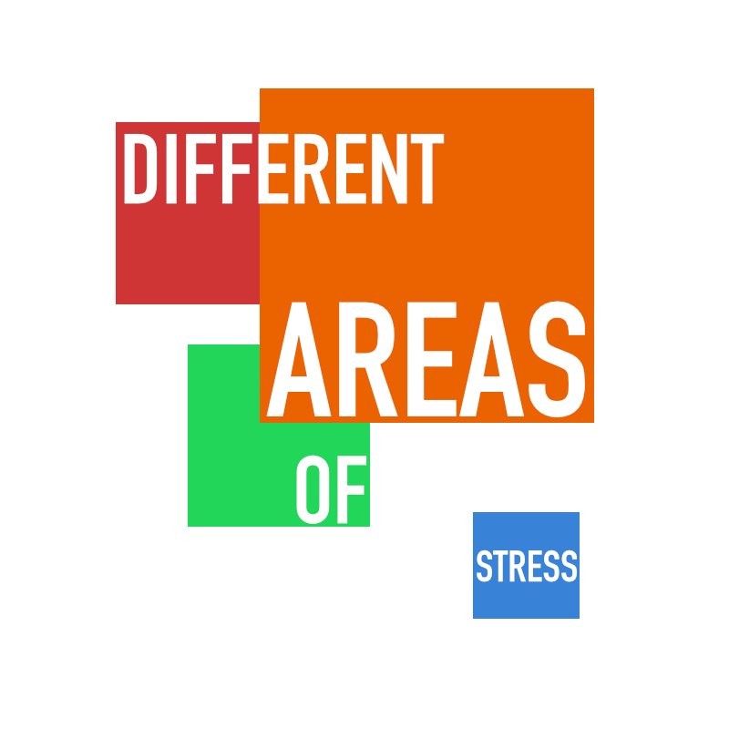

<ons-page id="page3">
  
  <ons-toolbar>
      <div class="left" style="background-color: #cf3535; color: #fff">
  <ons-back-button></ons-back-button>
</div>
    <div class="center" style="background-image: linear-gradient(90deg, #3883d8 50%, #ea6300 50%); color: #fff;">Stressors</div>
      
    <div class="right" style="background-color: #22d659; color: #fff;"></div>


  </ons-toolbar>
    
       <ons-row style="text-align: center; background-color: #FFF">  
           
                            
           </ons-row>
    

</ons-page>